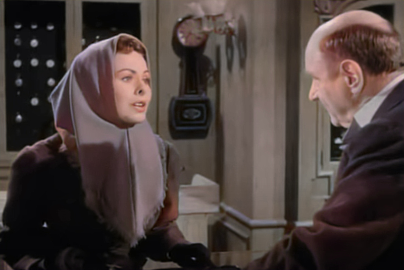
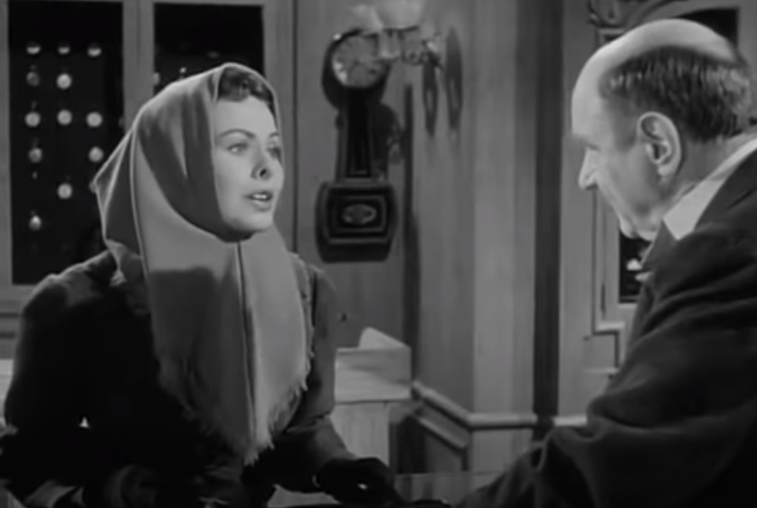
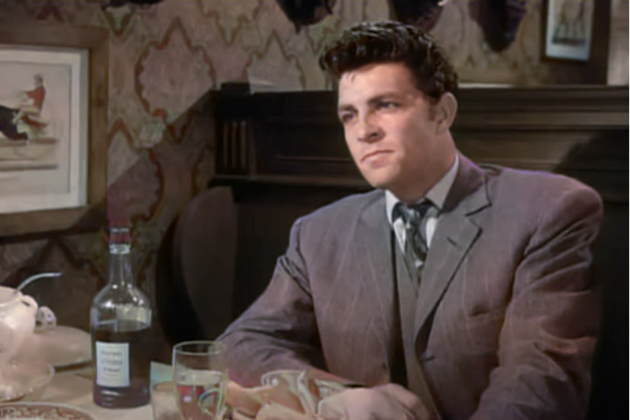
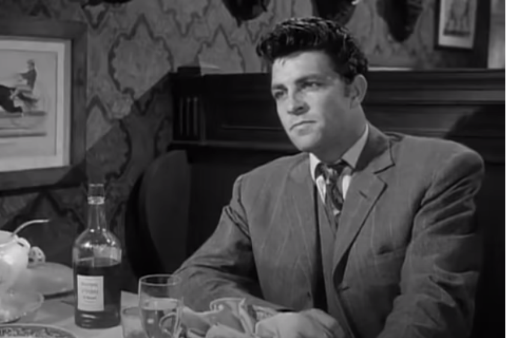
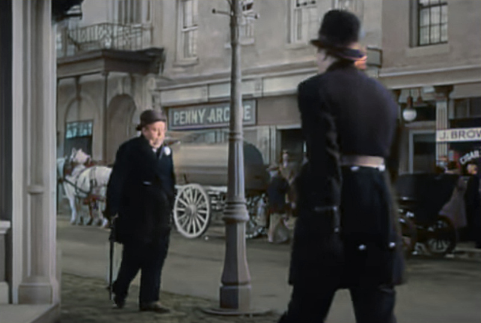

IA para generar los colores de una imagen vieja
Esa red se encarga de predecir cuáles son los colores originales en los fotogramas posteriores al primero. Al contar solo con una imagen de referencia en color, la IA aprende a localizar la región correcta de la que debe copiar los colores originales. Tomando como punto de inicio esa primera imagen, la herramienta de Google puede aplicar los colores necesarios en el resto del vídeo.
Imagenes del juego


